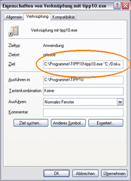
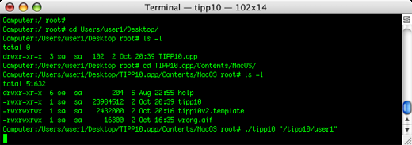

Introduction | Table of Contents | Installation
Introduction | Table of Contents | Installation 
2. General
2.1 TIPP10 Features
2.1.1 Intelligent text selection
The lesson texts react instantly to your typing mistakes by repeating mistyped letters more frequently. The system helps you eliminate typing mistakes and learn touch typing efficiently. A wide range of dictations ensures you'll never get bored.
You will become acquainted with all the keys on the keyboard in 20 sequential training lessons. Commonly used characters are practiced earlier and more frequently than those that appear less frequently.
2.1.2 Ticker and virtual assistance keyboard
You can change the font, speed and color of the text in the ticker to ensure a steady typing flow. Keys and motion paths appearing in color on a virtual keyboard help you to use the right fingers and keep the right starting position. A status bar displays the fingers that should be used, your typing errors and characters per minute.
2.1.3 Detailed results
After each typing lesson you will receive a printable comprehensive report that evaluates the lesson. A list of all completed lessons including details about duration, number of errors, characters per minute and an evaluation provide you with an overview of the work you have done. A lesson trend diagram shows your progress and allows you to easily compare your results. TIPP10 also shows you your error rate for all the characters and fingers used in the typing lessons. This way you can see right away which keys and which fingers you still need to work on.
2.1.4 Open lessons and using your own texts
You can use open lessons or create your own once you've got the hang of touch typing and seek to improve your error rate or speed. There are open lessons with dictations for specialized topics so that you can familiarize yourself with particular styles such as programming or legal texts. You can also load your own texts into TIPP10 and have them dictated to you.
2.1.5 Extensive customization
You can choose how the lesson will run. You can set the duration of the lesson, how the typing tutor reacts to typing errors and which visual aids will support you during the lesson. In general settings you can also personalize the software even more. Here, for example, you can select a different speed for the ticker or a larger typeface.
2.1.6 Platform independent and multilingual
TIPP10 runs in Windows, Mac OS X and various versions of Linux. The software is currently available in English and German and you can select various keyboard layouts. In addition to the QWERTY keyboard layout, you can also activate keyboards for Germany, for Switzerland or the alternative Neo, Dvorak and RISTOME keyboards. The user interface language and the language of the lesson as well as the keyboard layout can all be set separately.
2.2 System Requirements
A standard computer running a Windows, Macintosh or Linux operating system is required to use TIPP10.
The following systems are supported:
- Windows 98, 2000, XP, Vista and 7
- Mac OS X Version 10.3.x or higher (PPC or Intel processor)
- Various Linux versions (Ubuntu, Kubuntu, OpenSuse, Puppy, Redhat and others)
The computer should have sufficient memory (at least 64 MB) and processor performance (at least 800 MHz) in order to easily render the dynamic generation of the lessons. Your graphic card and monitor should also support at least 16 million colors (16 bit) and a screen resolution of at least 800x600 pixels.
2.3 Users and Data
2.3.1 Preface
TIPP10 users have raised the issue of user administration. Version 1 still stores user data in a database (tipp10.db) that could be found in TIPP10's program directory. Unfortunately this meant that TIPP10 could only be used by one person per computer because the same database was used despite the fact that lessons, error rates and the personalized dictation per for each user were different. This kind of administration also caused problems when TIPP10 was used in a network because no write permission for the program directory had been granted.
For this reason integrating a simple and user-friendly user administration with registration was considered. Unfortunately, registration places a host of additional demands on the software making necessary a user administration that allows for individual users to be modified or deleted. In addition, such levels of usability would make enhancements and updating the software and database significantly more difficult.
The TIPP10 program should remain simple and easy to use. Since the majority of TIPP10 users were working with one account per computer, version 2.0 implemented the following database management alternatives:
2.3.2 Portable version (Windows)
The portable version of TIPP10 saves data directly in the program directory so that only one person can use it. It is, however, very convenient for portable use and can be run on several computers using a USB stick with no risk of data loss.
The tipp10v2.db database with the user data and the settings.ini file with the program settings can be found in the following path in the portable version:
Application Folder\portable\
The portable folder is created automatically when the program is run the first time.
2.3.3 Installable version (Windows, Mac OS, Linux)
The installable version of TIPP10 creates a new database (tipp10v2.db) in the user's HOME folder when the program is run the first time.
The folder can usually be found in the following path:
Windows:
C:\Documents and Settings\Username\Application Data\TIPP10\
Mac OS:
/Users/Username/Library/Application Support/TIPP10/
Linux:
/home/Username/TIPP10/
The tipp10v2.db database is then placed in the TIPP10 folder. The path can be edited so it is directed to the database in TIPP10's general settings if necessary.
The benefits of this kind of database administration are:
1. The "typical" TIPP10 user using one computer and one account can continue to use TIPP10 as before and can specify individually where the database is stored (e.g., for backup).
2. Schools or other institutions with several user accounts per computer that don't use a central file server can use TIPP10 together. A database will be created in the HOME folder of each user.
3. Using TIPP10 in a network is trouble free. The executable program is provided by the file server while the database is created and used on the client. This way write permission is granted on the database and the client can process the relatively large data transmission (due to intelligent features).
Unfortunately this type of database administration will not work when several people use a single computer with only one user account. There is, however, a solution for this as well:
2.3.4 Database path parameter transfer
TIPP10 can be launched with a parameter that gives the program a current database folder. In this way it is possible for each user to create a shortcut to their own database folder.
In Windows you add a new shortcut to the tipp10.exe file. In the shortcut properties you can then enter the folder as a program parameter.

Windows example entry:
"C:\Applications\TIPP10\tipp10.exe" "C:/tipp10/user1"
Please take note of the following:
1. Command and parameter should be in quotation marks
2. The folder uses the normal slash (/)
3. The path indicates the database folder and not the database file itself
4. The folder name does not have a slash at the end
In MacOS enter the parameter after the program fetch as follows:
./tipp10 "/tipp10/user1"

In Linux you also simply enter the parameter after the program fetch as follows:
./tipp10 "/tipp10/user1"
The first time the program is launched with the shortcut a new database will automatically be created in the user1 directory. Please note that the directory must already exist!
 Introduction | Table of Contents | Installation
Introduction | Table of Contents | Installation 
© 2006-2011 Tom Thielicke IT Solutions